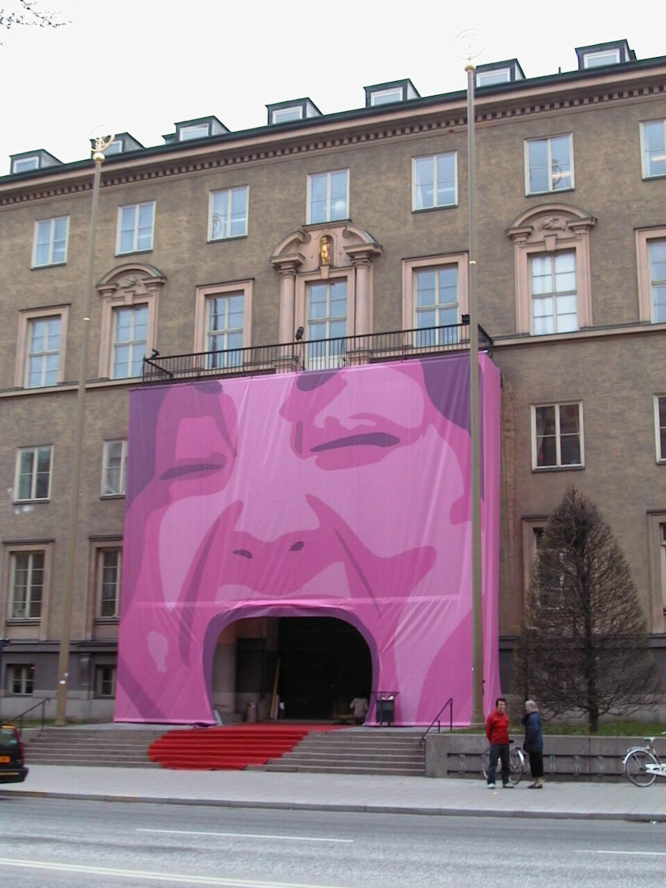

Mediaexpo 2000 (in collaboration with Joanna Zawieja)
| How to spark people's interest in a conference (Mediaexpo)
dealing with the impact of media on society? As the topic of the conference
in 2000 was "the struggle for attention in media", we covered
the entrance of the venue with a 'scream'. This also became the logotype
of the conference. It seems to have given some visibility to the building. (Note the red carpet tongue).
Installation covered in Swedish press DN 3 May 2000, SvD 3 May 2000,
Metro 2 May 2000. |